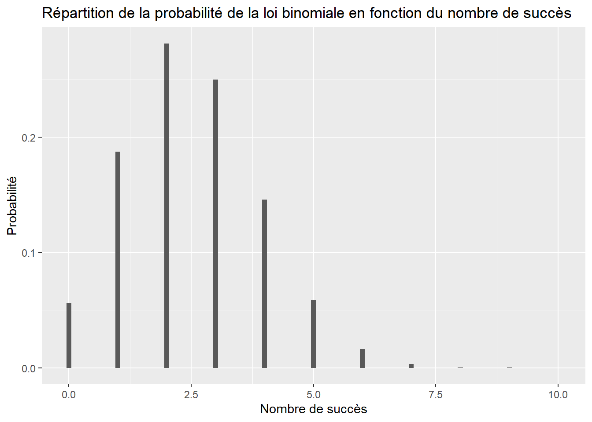
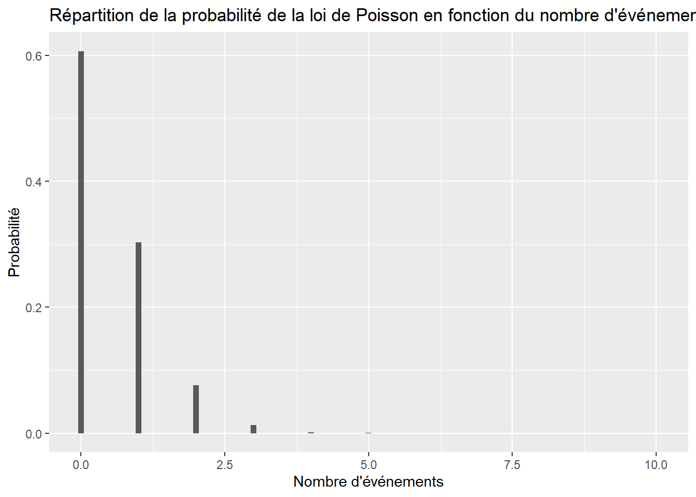
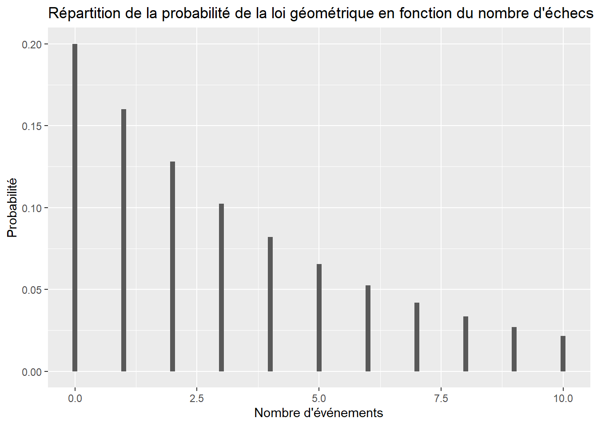
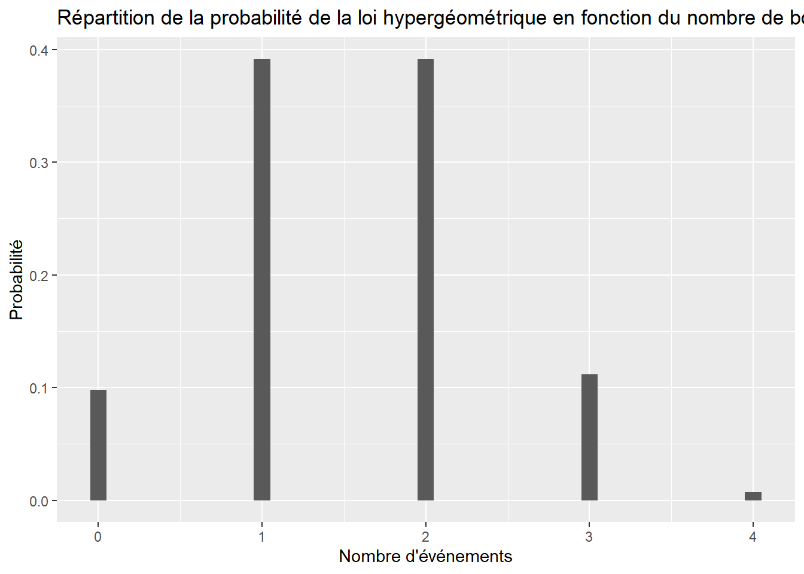
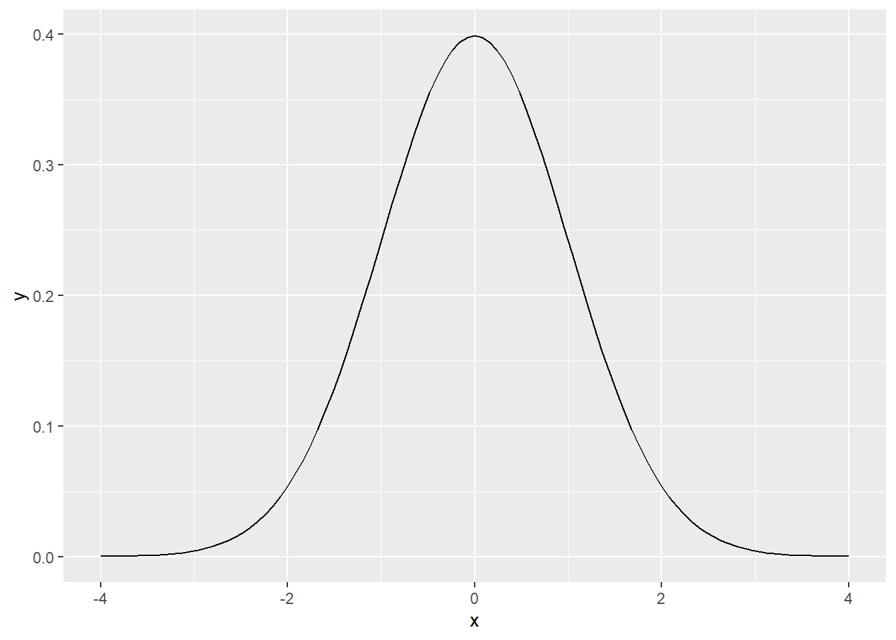
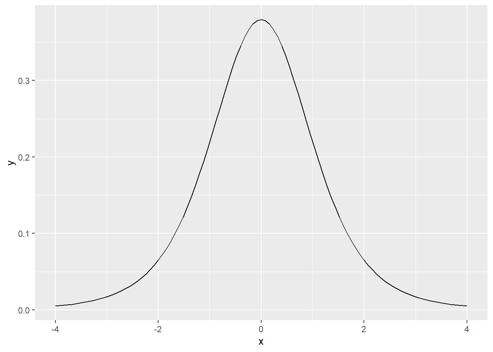

library(stats)
library(ggplot2)Les lois de probabilités
Pour être en mesure d’utiliser les lois de probabilités en langage R, il faut charger le paquetage stats.
Chaque distribution en R possède quatre fonctions qui lui sont associées. Premièrement, la fonction possède un nom racine, par exemple le nom racine pour la distribution binomiale est binom. Cette racine est précédée par une de ces quatre lettre:
ppour probabilité, qui représente la fonction de répartitionqpour quantile, l’inverse de la fonction de répartitiondpour densité, la fonction de densité de la distributionrpour random, une variable aléatoire suivant la distribution spécifiée.
Pour la loi binomiale par exemple, ces fonctions sont pbinom, qbinom, dbinom et rbinom.
Les lois de probabilités discrètes
La loi binomiale
Le nom racine pour la loi binomiale est binom.
Soit \(X\): le nombre de succès en \(n\) essais et \(X\sim B(n,p)\). Voici la façon de calculer des probabilités pour la loi binomiale à l’aide de R:
| Probabilités | Commande R |
|---|---|
| \(P(X=k)\) | dbinom(k, n, p) |
| \(P(i\leq X \leq j)\) | sum(dbinom(i:j, n, p)) |
| \(P(X\leq k)\) | pbinom(k, n, p) |
| \(P(X>k)\) | 1-pbinom(k, n, p) |
Soit \(X\) la variable aléatoire comptant le nombre de face 2 que nous obtenons en lançant un dé à quatre reprises. Nous avons que \(X\sim B(4,\frac{1}{6})\). Si nous voulons calculer \(P(X=3)\), nous aurons:
dbinom(3,4,1/6)
#> [1] 0.0154321Nous avons donc une probabilité de 1.5432099% d’obtenir 3 fois la face deux en lançant un dé à quatres reprises.
Nous pouvons représenter graphiquement la loi binomiale. Soit \(X~B(10,1/4)\). Nous aurons:
fbinom <- data.frame(x = 0:10, y = dbinom(0:10, 10, 1/4))
ggplot(fbinom, aes(x = x, y = y)) +
geom_bar(width = 0.1, stat = "identity") +
labs(
x = "Nombre de succès",
y = "Probabilité",
title = "Répartition de la probabilité de la loi binomiale en fonction du nombre de succès"
)
La loi de Poisson
Le nom racine pour la loi de Poisson est pois.
Soit \(X\): le nombre d’événements dans un intervalle fixé et \(X\sim Po(\lambda)\). Voici la façon de calculer des probabilités pour la loi de Poisson à l’aide de R:
| Probabilités | Commande R |
|---|---|
| \(P(X=k)\) | dpois(k, lambda) |
| \(P(i\leq X \leq j)\) | sum(dpois(i:j, lambda)) |
| \(P(X\leq k)\) | ppois(k, lambda) |
| \(P(X>k)\) | 1-ppois(k, lambda) |
Soit \(X\) le nombre d’erreurs dans une page. Si une page contient en moyenne une demie erreur alors \(X\sim Po(1/2)\). Si nous voulons calculer \(P(X=2)\), nous aurons:
dpois(2, 1/2)
#> [1] 0.07581633Nous avons donc une probabilité de 7.5816332% d’obtenir deux erreurs sur une page.
Nous pouvons représenter graphiquement la loi de Poisson. Soit \(X\sim Po(1/2)\). Nous aurons:
fpois <- data.frame(x = 0:10, y = dpois(0:10, 1/2))
ggplot(fpois, aes(x = x, y = y)) +
geom_bar(width = 0.1, stat = "identity") +
labs(
x = "Nombre d'événements",
y = "Probabilité",
title = "Répartition de la probabilité de la loi de Poisson en fonction du nombre d'événements"
)
La loi géométrique
Le nom racine pour la loi géométrique est geom.
Soit \(X\): le nombre d’échecs avant d’obtenir un succès et \(X\sim G(p)\). Voici la façon de calculer des probabilités pour la loi géométrique à l’aide de R:
| Probabilités | Commande R |
|---|---|
| \(P(X=k)\) | dgeom(k, p) |
| \(P(i\leq X \leq j)\) | sum(dgeom(i:j, p)) |
| \(P(X\leq k)\) | pgeom(k, p) |
| \(P(X>k)\) | 1-pgeom(k, p) |
Soit \(X\) le nombre d’échecs avant d’avoir un premier succès. Si la probabilité de succès est \(\frac{1}{5}\) alors \(X\sim G(1/5)\). Si nous voulons calculer \(P(X=6)\), nous aurons:
dgeom(6, 1/5)
#> [1] 0.0524288Nous avons donc une probabilité de 5.24288% d’obtenir 6 échecs avant un premier succès.
Nous pouvons représenter graphiquement la loi géométrique. Soit \(X\sim G(1/5)\). Nous aurons:
fgeom <- data.frame(x = 0:10, y = dgeom(0:10, 1/5))
ggplot(fgeom, aes(x = x, y = y)) +
geom_bar(width = 0.1, stat = "identity") +
labs(
x = "Nombre d'événements",
y = "Probabilité",
title = "Répartition de la probabilité de la loi géométrique en fonction du nombre d'échecs avant le premier succès"
)
Remarque : Pour la loi géométrique, on rencontre parfois cette définition : la probabilité p’(k) est la probabilité, lors d’une succession d’épreuves de Bernoulli indépendantes, d’obtenir k échecs avant un succès. On remarque qu’il ne s’agit que d’un décalage de la précédente loi géométrique. Si \(X\) suit la loi \(p\), alors \(X+1\) suit la loi \(p'\).
La loi hypergéométrique
Le nom racine pour la loi hypergéométrique est hyper.
On tire sans remise \(n\) objets d’un ensemble de \(N\) objets dont \(A\) possèdent une caractéristique particulière (et les autres \(B=N-A\) ne la possèdent pas). Soit \(X\) le nombre d’objets de l’échantillon qui possèdent la caractéristique. Nous avons que \(X\sim H(N,A,n)\).
Voici la façon de calculer des probabilités pour la loi hypergéométrique à l’aide de R:
| Probabilités | Commande R |
|---|---|
| \(P(X=k)\) | dhyper(k, A, B, n) |
| \(P(i\leq X \leq j)\) | sum(dhyper(i:j, A, B, n)) |
| \(P(X\leq k)\) | phyper(k, A, B, n) |
| \(P(X>k)\) | 1-phyper(k, A, B, n) |
Soit \(X\) le nombre de boules blanches de l’échantillon de taille 4. Si l’urne contient 5 boules blanches et 8 boules noires, nous avons \(X\sim H(13,5,4)\). Si nous voulons calculer \(P(X=2)\), nous aurons:
dhyper(2, 5, 8, 4)
#> [1] 0.3916084Nous avons donc une probabilité de 39.1608392% de piger 2 boules blanches dans un échantillon de taille 4.
Nous pouvons représenter graphiquement la loi hypergéométrique. Soit \(X\sim H(13,5,4)\). Nous aurons:
fhyper <- data.frame(x = 0:4, y = dhyper(0:4, 5, 8, 4))
ggplot(fhyper, aes(x = x, y = y)) +
geom_bar(width = 0.1, stat = "identity") +
labs(
x = "Nombre d'événements",
y = "Probabilité",
title = "Répartition de la probabilité de la loi hypergéométrique en fonction du nombre de boules blanches dans l'échantillon"
)
Les lois de probabilités continues
La loi normale
Le nom racine pour la loi normale est norm.
Si \(X\) suit une loi normale de moyenne \(\mu\) et de variance \(\sigma^2\), nous avons \(X\sim N(\mu,\sigma^2)\).
Voici la façon de calculer des probabilités pour la loi normale à l’aide de R:
| Probabilités | Commande R |
|---|---|
| \(P(i\leq X \leq j)\) | pnorm(j, mu, sigma)-pnorm(i, mu, sigma) |
| \(P(X\leq k)\) | pnorm(k, mu, sigma) |
| \(P(X>k)\) | 1-pnorm(k, mu, sigma) |
Soit \(X\sim N(3,25)\) une variable aléatoire suivant une loi normale de moyenne 3 et de variance 25. Si nous voulons calculer la probabilité \(P(1.25<X<3.6)\) en R, nous pouvons utiliser la commande suivante:
pnorm(3.6, 3, 5) - pnorm(1.25, 3, 5)
#> [1] 0.1845891La probabilité que notre variable aléatoire se trouve entre 1.25 et 3.6 est donc 18.4589077 %.
Nous pouvons représenter graphiquement la loi normale. Soit \(X\sim N(0,1)\). Nous aurons:
ggplot(data = data.frame(x = c(-4, 4)), aes(x)) +
stat_function(fun = dnorm, args = list(mean = 0, sd = 1))
La loi de Student
Le nom racine pour la loi de Student est t.
Si \(X\) suit une loi de Student à \(\nu\) degrés de liberté, nous avons \(X\sim T_{\nu}\).
Voici la façon de calculer des probabilités pour la loi de Student à l’aide de R:
| Probabilités | Commande R |
|---|---|
| \(P(i\leq X \leq j)\) | pt(j, nu)-pt(i, nu) |
| \(P(X\leq k)\) | pt(k, nu) |
| \(P(X>k)\) | 1-pt(k, nu) |
Soit \(X\sim T_5\) une variable aléatoire suivant une loi de Student à 5 degrés de liberté. Si nous voulons calculer la probabilité \(P(X>3)\) en R, nous pouvons utiliser la commande suivante:
1 - pt(3, 5)
#> [1] 0.01504962La probabilité que notre variable aléatoire soit plus grande que 3 est donc 1.5049624 %.
Nous pouvons représenter graphiquement la loi de Student. Soit \(X\sim T_{5}\). Nous aurons:
ggplot(data = data.frame(x = c(-4, 4)), aes(x)) +
stat_function(fun = dt, args = list(df = 5))